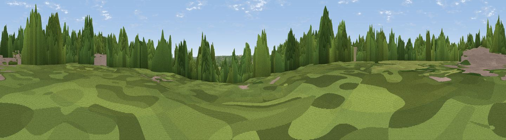

Colehill
#41941 in England · top 79% of its area beats it · near FurzehillWhere it is
The exact computed spot (SU 02430 00983). Click the marker for map links.
The view, rendered

A 360° render of this exact spot computed from the terrain model, tree cover and land cover — summer colours, afternoon light, calibrated against photographs of famous viewpoints. Real trees, hedges and buildings will differ in detail.
The panorama
Grey silhouette: terrain skyline in each direction (720 bearings, Earth curvature and refraction included). Dashed green: skyline with trees (+15 m) and buildings (+8 m) as obstacles. Blue strip: how far the ground is visible on each bearing.
Where the view opens
Wedge length = distance to the farthest visible ground on that bearing (vegetation-aware). Rings at 10, 25 and 50 km.
What fills the view
43% woodland · 34% grassland · 13% built-up · 9% cropland
Angular shares of the visible panorama (visual magnitude), not map area. Landscape diversity 0.54 (0–1 Shannon).
Key numbers
More beautiful places nearby
The staircase of upgrades: each row has a higher view potential than everything closer. Driving times are estimates from straight-line distance, calibrated against real road routing — check an actual route before setting out.
| Place | Direction | Drive | Score |
|---|---|---|---|
| Viewpoint near Hampreston | E · 2 km | ~5 min | 30.5 |
| Viewpoint near Merley | S · 4 km | ~9 min | 43.7 |
| Viewpoint near Merley | S · 4 km | ~10 min | 50.5 |
| Viewpoint near Corfe Mullen | SW · 7 km | ~15 min | 60.9 |
| Viewpoint near Cranborne | N · 16 km | ~28 min | 65.0 |
| Viewpoint near Harman's Cross | S · 20 km | ~33 min | 76.9 |
| Viewpoint near Harman's Cross | S · 20 km | ~33 min | 80.8 |
| Viewpoint near Studland | S · 20 km | ~33 min | 82.2 |
50.80839, -1.96689 · source: dobih hill · position refined by local search. Computed location — check access rights before visiting.